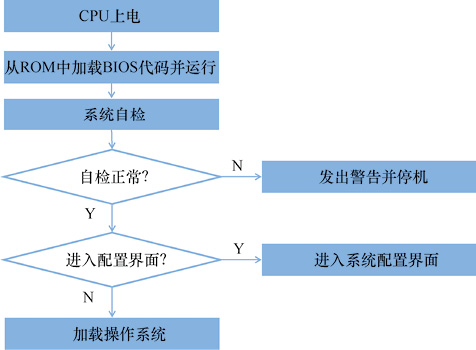

首页 > 编程笔记
BIOS固件是什么？
BIOS 是固化到主板上的软件，是开机后执行的第一个程序。
固件（Firmware）是指向电子硬件中嵌入的软件程序。这种电子硬件一般带有可擦写的存储器，软件程序可以写入存储器中来改变电子硬件的功能。
计算机中最重要的固件是基本输入输出系统（Basic Input Output System，BIOS），BIOS 包含了计算机在开机时需要运行的初始化程序。
BIOS 存储在主板上的一个“只读存储器”（Read-only Memory，ROM）芯片中，这个芯片的内容是在计算机出厂之前使用专业的生产设备写入的，出厂后就固化住，用户一般不用修改。
BIOS 是 CPU 运行的第一个软件。在计算机主板开机上电时，CPU 从 ROM 中读取软件代码来执行。
BIOS 主要执行3方面的功能，工作流程如图1所示。
BIOS 还会对内存条进行数据读写校验，如果写入内存的数据和读出来的不一致，则代表内存有坏单元，BIOS 会发出警告，停止启动。
BIOS 有很多用途，比如：
至此，BIOS 就完成了全部任务，接下来就由操作系统来接管整个计算机。
BIOS 的整个生命周期就是从计算机上电开机，直到操作系统投入运行。在龙芯计算机上，BIOS 的运行时间只有短短几秒。BIOS 的代码规模也很小，现在一个 4MB 的 ROM 芯片就可以装下。
龙芯计算机使用的 BIOS 一般采用开源软件项目进行改造。2018 年之前的龙芯计算机一直使用 PMON 项目，2018 年之后则转为使用功能更先进、更符合业界最新标准的 UEFI 项目。
固件属于一个专业狭窄的开发领域，不会直接向消费者销售，只能销售给 CPU 厂商、计算机厂商。固件又是一个开发难度非常高的产品，需要开发人员对计算机原理有全面的理解，又需要开发人员与时俱进地学习各种新型硬件设备。因此，专业做固件的厂商在市场上只有很“小众”的几家，从事固件开发的人员也是计算机人才中的精英，掌握固件开发能力是会“造计算机”不可缺少的环节。
固件（Firmware）是指向电子硬件中嵌入的软件程序。这种电子硬件一般带有可擦写的存储器，软件程序可以写入存储器中来改变电子硬件的功能。
计算机中最重要的固件是基本输入输出系统（Basic Input Output System，BIOS），BIOS 包含了计算机在开机时需要运行的初始化程序。
BIOS 存储在主板上的一个“只读存储器”（Read-only Memory，ROM）芯片中，这个芯片的内容是在计算机出厂之前使用专业的生产设备写入的，出厂后就固化住，用户一般不用修改。
BIOS 是 CPU 运行的第一个软件。在计算机主板开机上电时，CPU 从 ROM 中读取软件代码来执行。
BIOS 主要执行3方面的功能，工作流程如图1所示。

图1：BIOS 的工作流程
图1：BIOS 的工作流程
1) 系统自检
BIOS 会对计算机上所有硬件进行探测，确保计算机中已经正确安装了所有必要的模块。要探测的内容有 CPU 型号、物理内存容量、键盘、鼠标、硬盘、显示器、网卡等。BIOS 还会对内存条进行数据读写校验，如果写入内存的数据和读出来的不一致，则代表内存有坏单元，BIOS 会发出警告，停止启动。
2) 初始配置
BIOS 提供菜单界面，用户可以对计算机进行一些配置。计算机的说明书中都会专门讲述 BIOS 的设置方法。BIOS 有很多用途，比如：
- 在 BIOS 中可以设置开机密码，用户只有输入正确密码才能进入系统；
- 可以设置计算机的日期、时间，查看 CPU 的温度；
- 还可以设置计算机上启动操作系统的存储设备是从光盘启动还是从硬盘启动；
- 在服务器上，还可以设置磁盘阵列（Redundant Arrays of Independent Disks，RAID），使用多个磁盘构成冗余备份来提高数据存储的安全性。
3) 加载操作系统
这是 BIOS 最重要的功能，在系统自检通过后，BIOS 从存储设备（硬盘或光盘）上找到操作系统的文件，把操作系统的引导程序加载到内存中运行。至此，BIOS 就完成了全部任务，接下来就由操作系统来接管整个计算机。
BIOS 的整个生命周期就是从计算机上电开机，直到操作系统投入运行。在龙芯计算机上，BIOS 的运行时间只有短短几秒。BIOS 的代码规模也很小，现在一个 4MB 的 ROM 芯片就可以装下。
龙芯计算机使用的 BIOS 一般采用开源软件项目进行改造。2018 年之前的龙芯计算机一直使用 PMON 项目，2018 年之后则转为使用功能更先进、更符合业界最新标准的 UEFI 项目。
固件属于一个专业狭窄的开发领域，不会直接向消费者销售，只能销售给 CPU 厂商、计算机厂商。固件又是一个开发难度非常高的产品，需要开发人员对计算机原理有全面的理解，又需要开发人员与时俱进地学习各种新型硬件设备。因此，专业做固件的厂商在市场上只有很“小众”的几家，从事固件开发的人员也是计算机人才中的精英，掌握固件开发能力是会“造计算机”不可缺少的环节。
关注公众号「站长严长生」，在手机上阅读所有教程，随时随地都能学习。内含一款搜索神器，免费下载全网书籍和视频。

微信扫码关注公众号